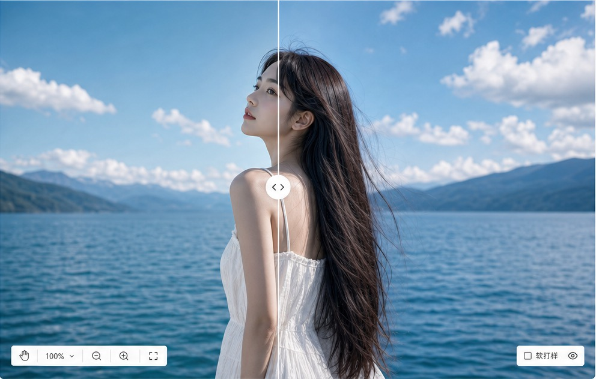

S
Shotai
V3.0
拍前参考
调色工作台
预设中心
历史记录
AI 服务 · 正常
帮助
张三
参考图队列
上传参考照片
湖边人像
当前分析图
雪山湖泊
场景参考
海边侧光
光线参考
胶片低反差
色彩参考
添加更多
主预览
拍前分析
当前图
网格
全屏

Canon EOS R6 Mark II
ISO 100
24mm
f/5.6
1/500s
曝光补偿 0EV
S
Shotai
V3.0
拍前参考
调色工作台
预设中心
历史记录
AI 服务 · 正常
帮助
张三
目标风格照
清新自然
当前实拍
IMG_2048.JPG
已套用 AI 建议 · 50%
当前
选中
待处理
已完成
失败
添加更多
主预览
调色工作台
原图
调整后
并排
分割
高光
阴影
饱和
100%
软打样
已更新